图形界面替代方案
若提示的是“无法验证开发者”，可前往“系统设置 → 隐私与安全性”，点击“仍要打开”。 macOS 15 及以后主要使用这一入口。
适用于 macOS Apple Silicon 与 Windows x64，包含安装、Agent 接入、更新和 OMR 配置。
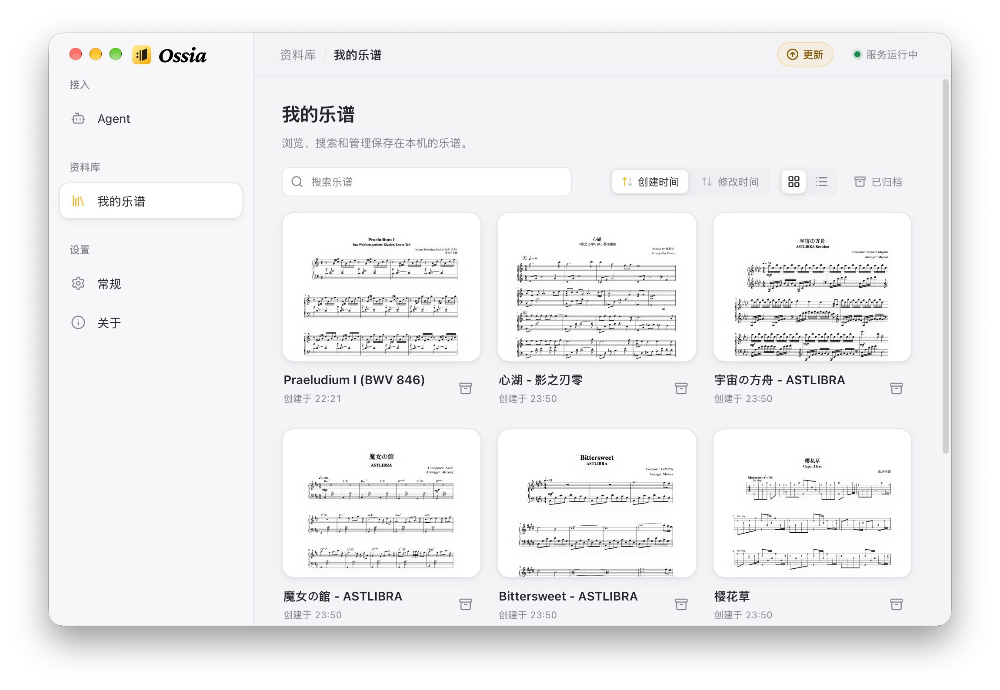
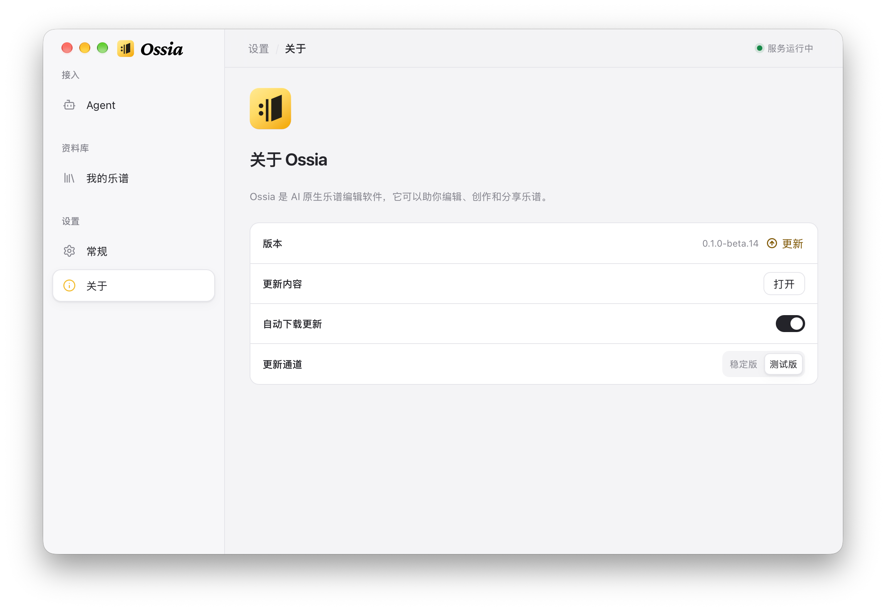
当前提供 Apple Silicon macOS 与 Windows x64。只从以下官方链接下载。
| 平台 | 当前版本 | 下载 |
|---|---|---|
|
macOS
Apple Silicon · macOS 12 Monterey 或更高 DMG · ossia-darwin-arm64.dmg |
0.1.0-beta.19 | 下载 DMG |
|
Windows
64 位 Windows 10 或 Windows 11 EXE / NSIS · ossia-windows-amd64.exe |
0.1.0-beta.19 | 下载 EXE |
macOS 会阻止未签名、未公证的应用。若提示“Ossia.app 已损坏”，通常是 Gatekeeper 的下载隔离标记，不是应用真的损坏。
双击 DMG，把 Ossia.app 拖到 Applications（应用程序）文件夹，不要直接双击 DMG 内的应用运行。
打开 Finder 的“应用程序”，双击 Ossia。若出现安全拦截，先让系统记录这次启动，再继续处理。
点击“取消”，然后在终端移除隔离属性。只有文件哈希不符、下载不完整或系统版本不兼容时，才需要重新下载。
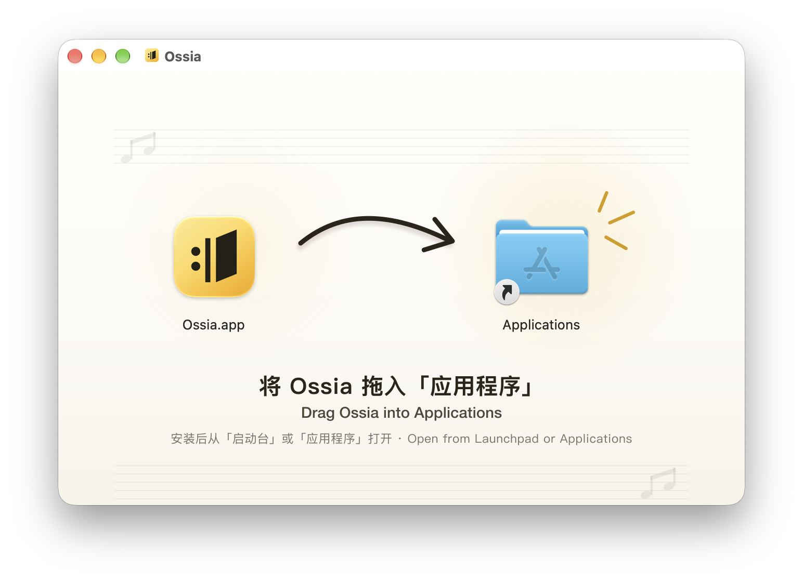
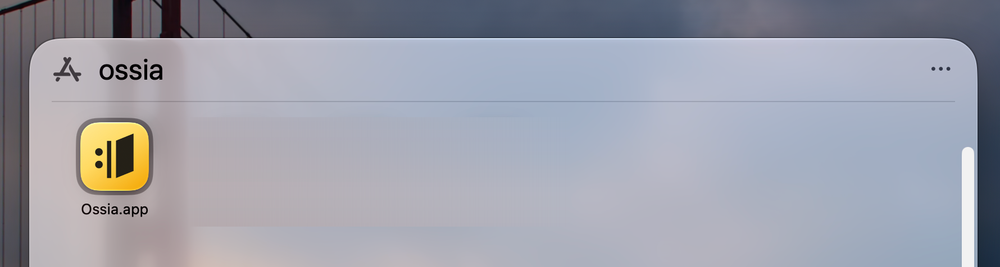
/Applications。
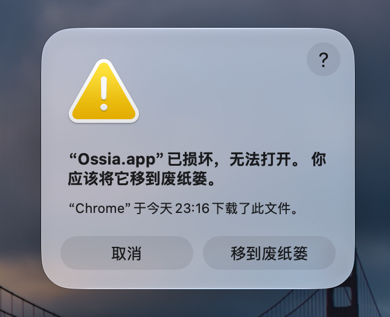
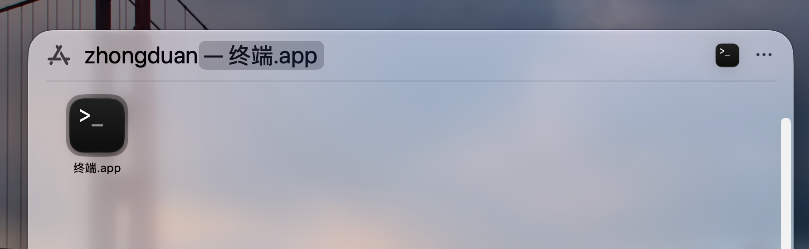
用 Spotlight 搜索“终端”或“Terminal”，也可以在“启动台 → 其他”中打开。无需管理员权限。
执行以下命令，然后重新打开 Ossia：
xattr -dr com.apple.quarantine /Applications/Ossia.app/命令成功时通常没有输出，返回新的命令提示符即表示执行完成。
输出中不再出现 com.apple.quarantine 即表示已清除。
xattr -l /Applications/Ossia.app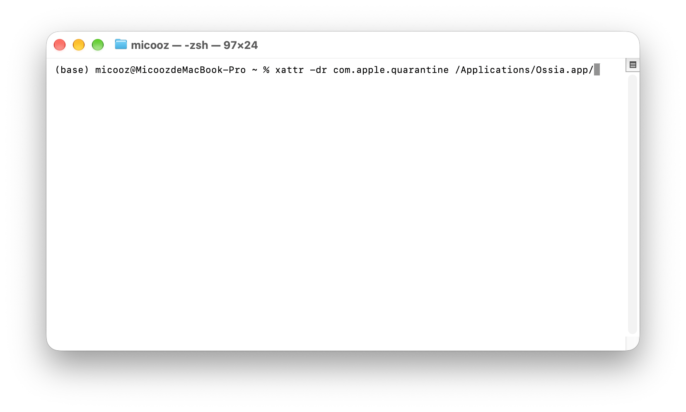
/Applications/Ossia.app/。
若提示的是“无法验证开发者”，可前往“系统设置 → 隐私与安全性”，点击“仍要打开”。 macOS 15 及以后主要使用这一入口。
不要使用 spctl --master-disable
关闭整个系统保护。只对从本文官方链接下载的 Ossia 安装包移除隔离属性。
SmartScreen 会拦截未签名安装包。确认文件来自本文链接后继续。
ossia-windows-amd64.exe双击安装包。如果浏览器提示文件不常见，先核对下载地址。
SmartScreen 首次只显示“不运行”按钮，展开后才会出现运行选项。
随后按 NSIS 安装向导完成安装。默认会创建开始菜单和桌面入口。
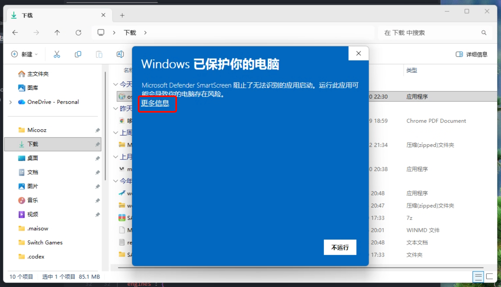
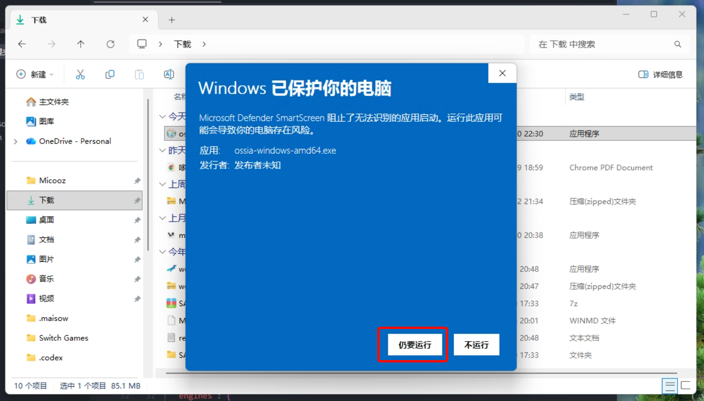
Ossia 的本地服务负责乐谱库、渲染和导出。接入 DeepSeek Harness、Codex 或 WorkBuddy 后，可以直接在 Agent 中创建、编辑、检查与导出版本。
启动 Ossia，管理窗口右上角应显示绿色的“服务运行中”。若未启动，先点击“启动服务”。
点击 DeepSeek Harness、Codex 或 WorkBuddy 的卡片完成接入。接入后需要新建会话； 已经打开的 Agent 会话不会自动获得插件。WorkBuddy 首次调用前还需要在连接器中信任 Ossia MCP。
在 DeepSeek Harness 输入 /ossia 自检一下，让 Agent 检查后端、LilyPond
引擎、离线手册、乐谱库和版本状态。
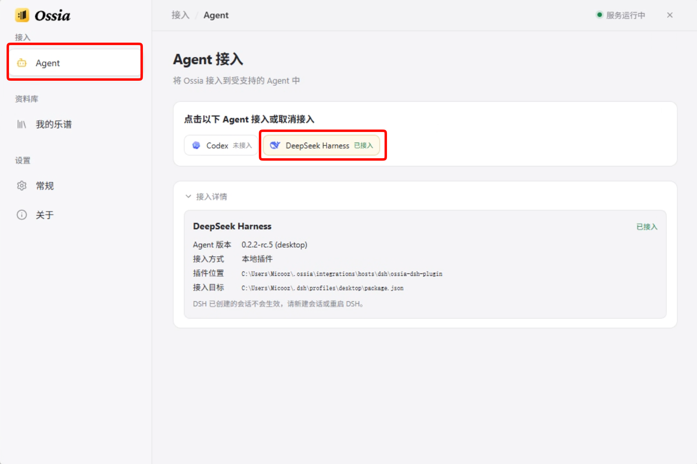
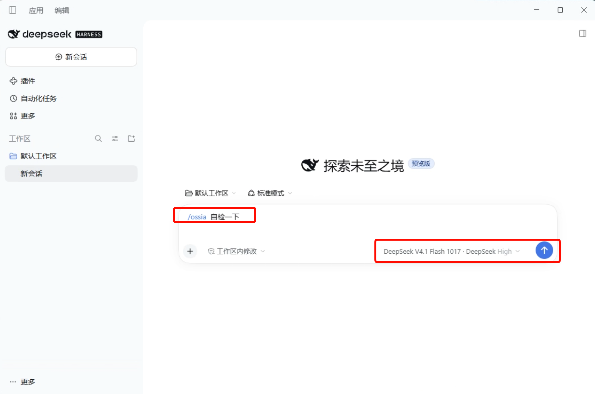
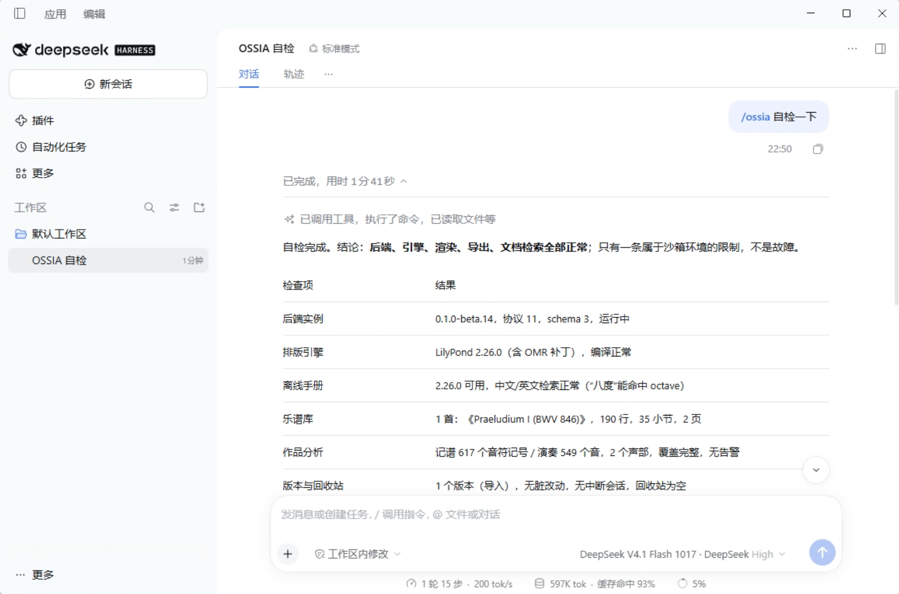
Ossia 启动 5 秒后检查一次更新，并在保持运行时继续检查：测试版每 6 小时、稳定版每 24 小时检查一次。也可以在“设置 → 关于”手动检查。
| 打开位置 | 设置 → 关于 |
| 当前版本 | 以“设置 → 关于”页显示的版本号为准 |
| 更新通道 | 测试版 |
| 自动下载 | 默认开启；下载后仍需手动点击“更新” |
直接退出 Ossia 会丢弃尚未安装的下载。
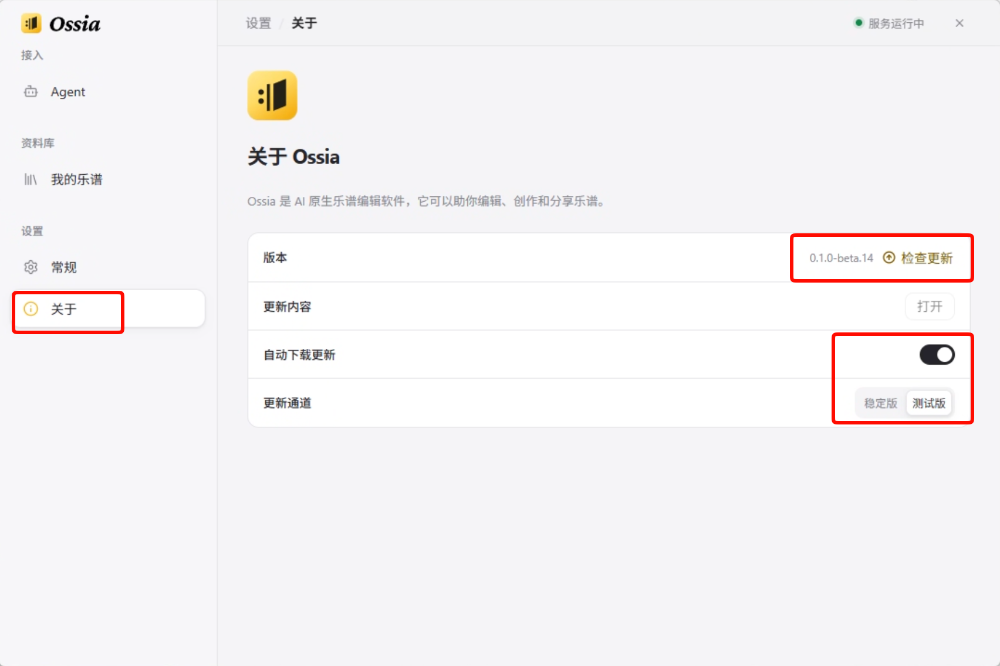
PDF、PNG、JPEG 和 TIFF 导入依赖远程识别服务。普通 LilyPond、MusicXML 和 MIDI 不需要访问密钥。
服务类型选择“Ossia OMR”。若使用自建服务，则选择“自定义”并填写服务地址。
在“访问密钥”中粘贴 Ossia 提供的密钥，然后点击“保存”。保存后界面只显示掩码，不提供登录或连接测试按钮。
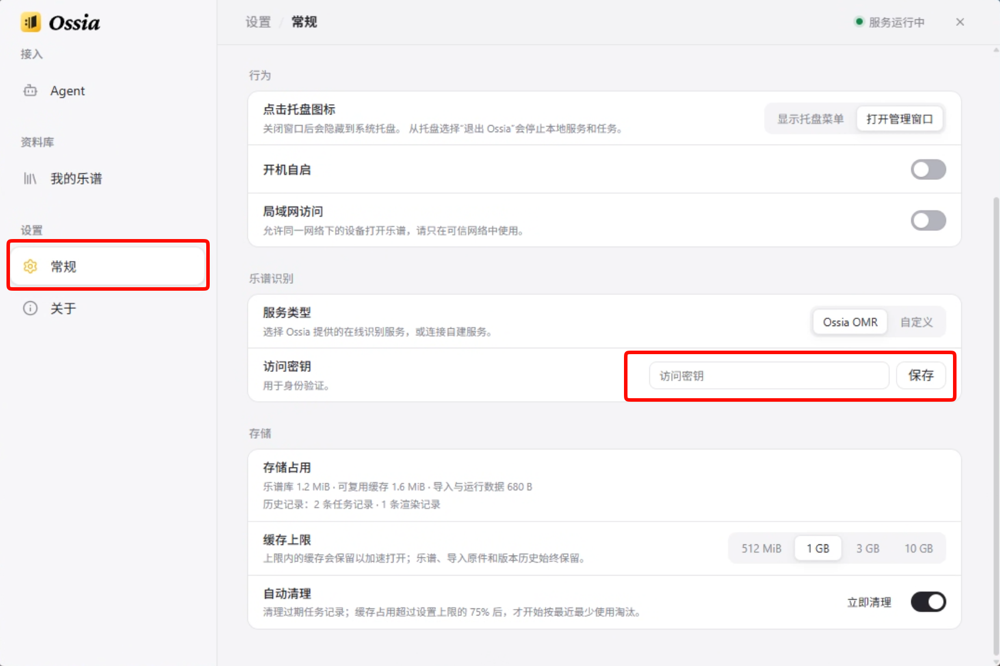
不需要。确认 Ossia.app 已放入“应用程序”，然后运行
xattr -dr com.apple.quarantine /Applications/Ossia.app/，再重新打开应用。
确认安装包来自本文链接，并核对系统架构。仍失败时删除应用后重新下载；不要通过关闭整个 Gatekeeper 来排查单个应用。
点击 SmartScreen 提示左侧的“更多信息”，随后会出现“仍要运行”。如果仍无按钮，请检查企业策略或安全软件拦截。
先安装并至少启动一次宿主应用，再回到 Ossia 的“接入 → Agent”。接入后重启宿主或新建会话。
在“设置 → 关于”把更新通道切换为“测试版”，再点击“检查更新”。稳定版通道不会收到 beta 包。
当前发布只包含 Apple Silicon macOS 和 Windows x64。其他目标需要单独构建和验证。
默认情况下关闭管理窗口会隐藏到系统托盘，本地服务继续运行。需要彻底停止时，从托盘菜单选择“退出 Ossia”。